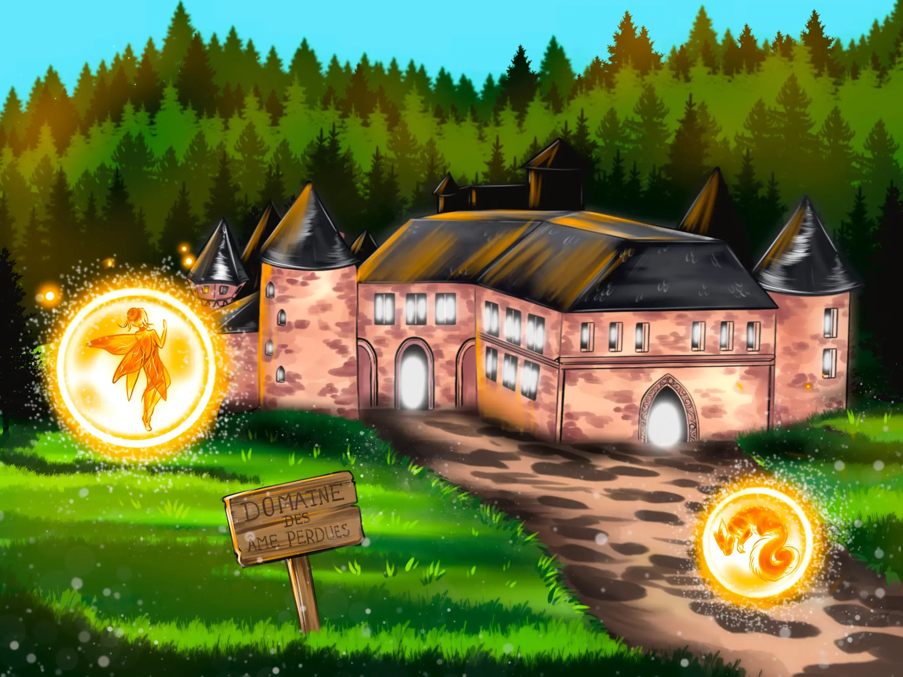

Pour poursuivre ta visite d’Arzankia, récolte un ingrédient magique !
Monde des Âmes perdues

« Ce monde accueille les âmes égarées des différents royaumes d’Arzankia.
Pour les libérer, il faut les guider jusqu’à leur monde d’origine, afin qu’elles retrouvent leur corps… et leur destinée. »